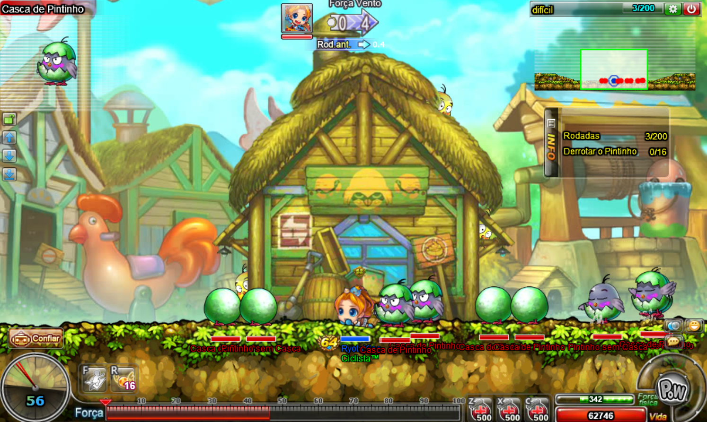
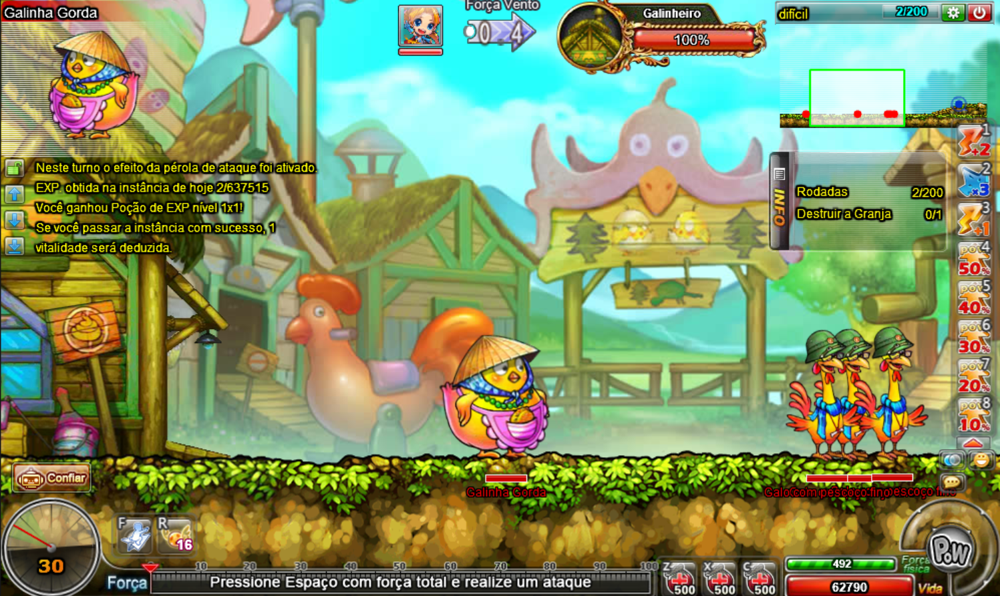
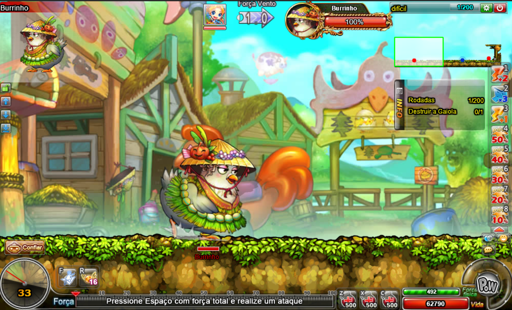

A instância do galinheiro também é bem simples, nela você enfrentará pintinhos, galos e galinhas do mal a fim de salvar os pintinhos aprisionados.
O galinheiro possue as dificuldades: fácil, normal e difícil.
Na dificuldade fácil, existem apenas 2 estágios (O 1 e o 3) e nas outras 2, existem 3 estágios.

No estágio 1 você enfrentará pintinhos com e sem casca, derrote-os para passar para o próximo estágio.

No estágio 2 o objetivo é destruir o galinheiro, enquanto galos do pescoço fino e galinhas gordas tentam te impedir. Destrua o galinheiro para passar para o próximo estágio.

No estágio 3 você enfrentará "burrinho", uma galinha gorda que aprisiona seus pintinhos. Derrote-a e logo em seguida destrua a gaiola para libertar os pintinhos e concluir a instância.